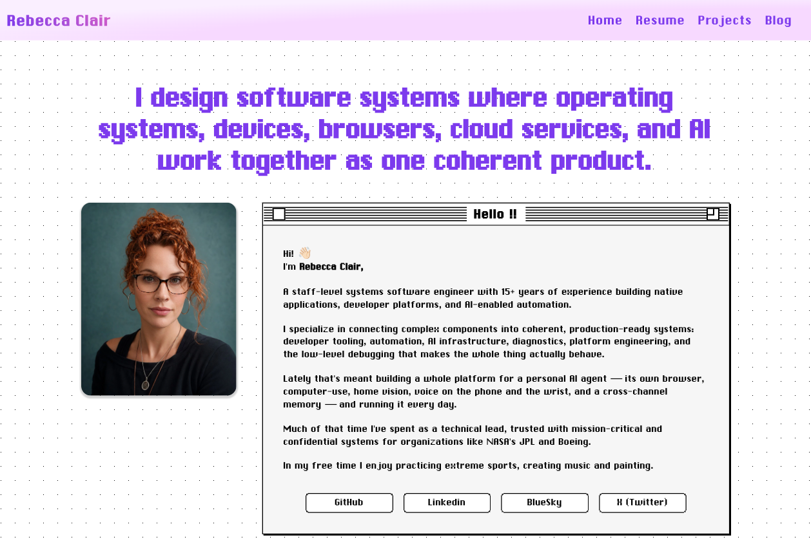
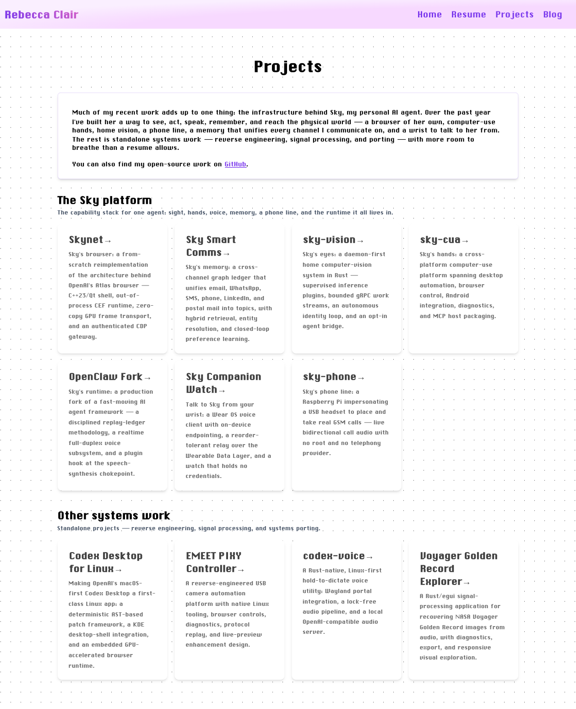
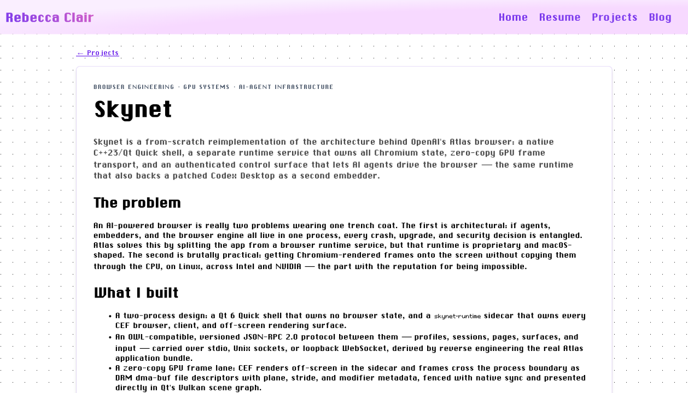
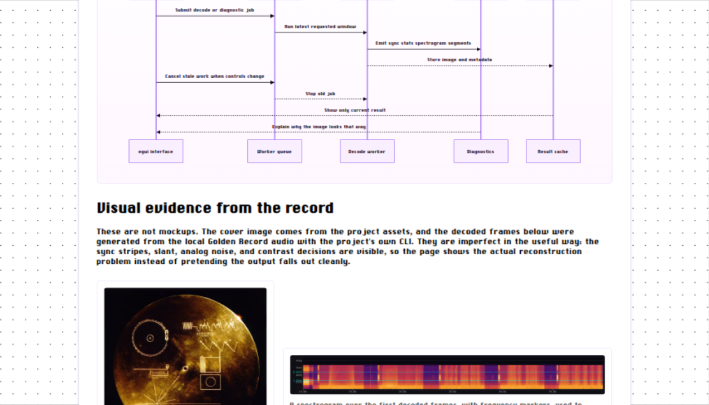
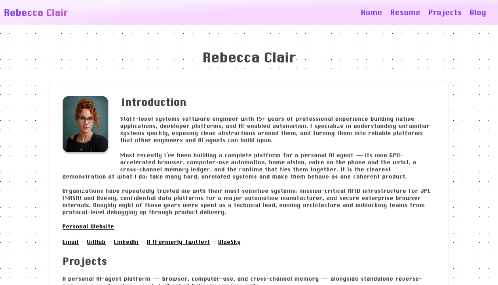
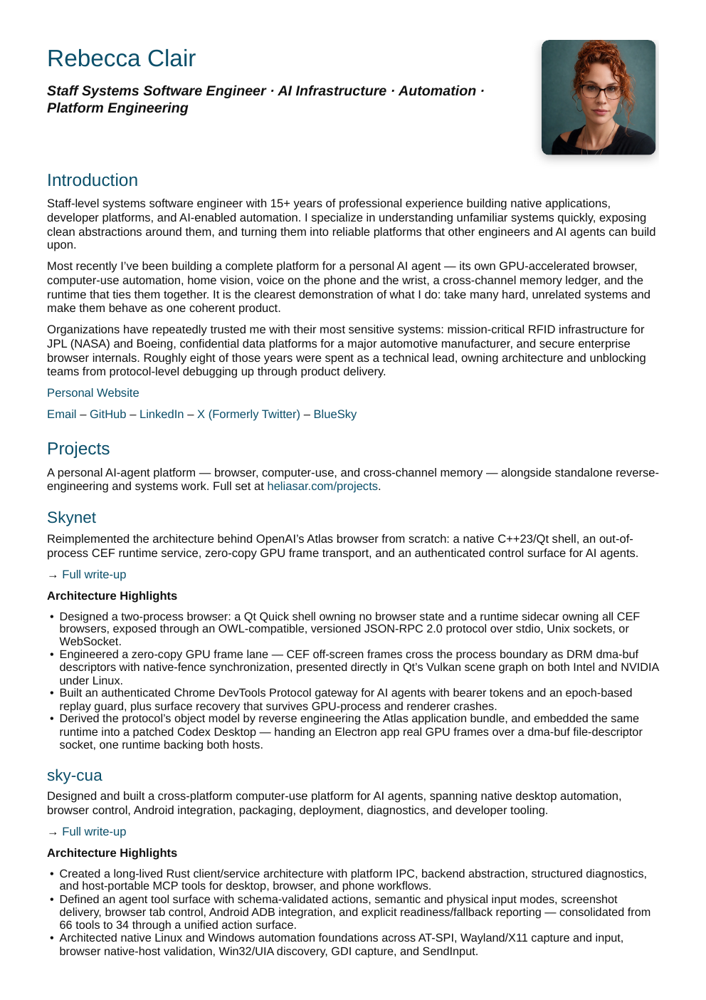
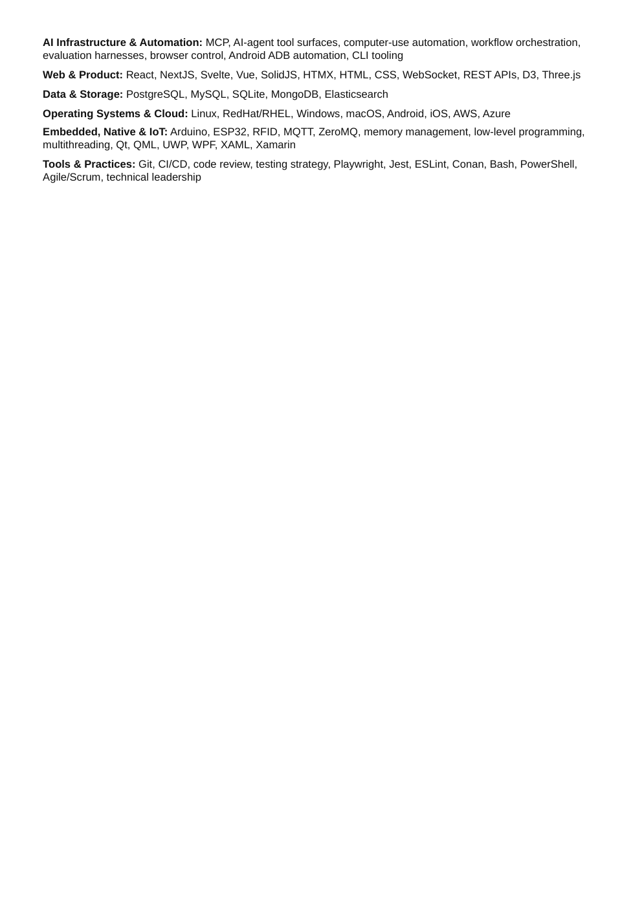
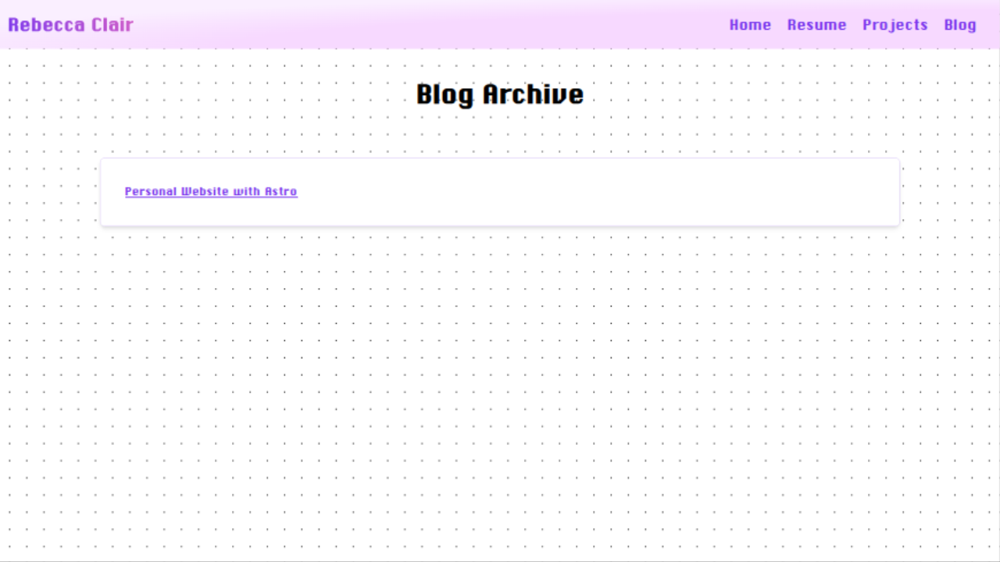
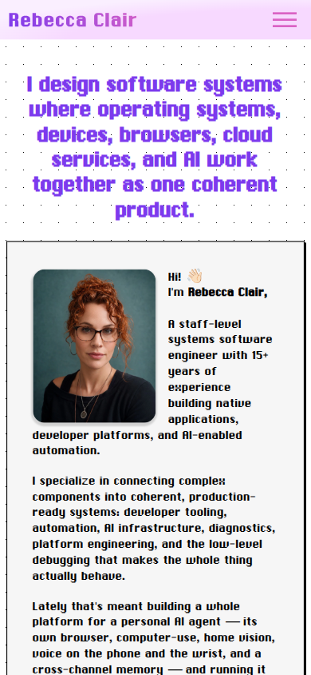
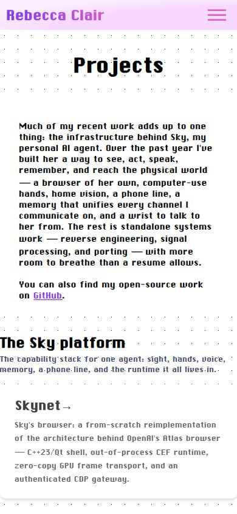

Engineering signal
9/10
Architecture, reverse engineering, product judgment, and operational thinking are all convincingly present.
The site already proves deep systems judgment, curiosity, and technical range. Its problem is not substance. Its problem is that a recruiter has to work too hard to discover the strongest evidence—and the resume repeats that same friction.
This feels like an unusually rich engineering archive. It does not yet behave like a deliberate staff-engineer hiring narrative.
Architecture, reverse engineering, product judgment, and operational thinking are all convincingly present.
The strongest proof is buried behind long intros, equal-weight projects, dense typography, and a four-page resume.
The site has a real personality. Removing the retro identity would make it more generic, not more employable.
Portrait, purple and pink palette, retro interaction chrome, architecture diagrams, hands-on project range, candid technical voice, and the “systems over snippets” worldview.
Hero hierarchy, primary actions, body typography, project curation, proof density, case-study scan layers, resume structure, mobile pacing, and the abandoned blog signal.
The same material produces three different reactions. The redesign should preserve the peer reaction while fixing the recruiter and hiring-manager gaps.
Experience is too deep in the resume, projects carry equal visual weight, and the homepage offers social links instead of an obvious work / resume / contact path.
The systems reasoning is exceptional. The missing layer is organizational impact: scale, adoption, reliability, decisions influenced, and what changed for users or teams.
The trade-offs, debugging stories, diagrams, hardware work, and willingness to expose imperfect outcomes create rare credibility. Do not sand that away.
Ten views, ordered as a potential employer encounters them. Each note separates what already works from the conversion risk and the recommended change.

A clear systems thesis, memorable portrait, and unmistakable retro identity.
No primary hiring action. The semantic H1 is “Hello !!”; social links are the only visible next steps.
Use a shorter thesis, a compact proof strip, and three actions: Selected Work, Download resume, Contact.
Make the thesis the H1 and keep all core copy selectable and comfortably readable.

The Sky platform makes a system-of-systems narrative coherent and demonstrates serious breadth.
Eleven projects carry near-equal visual weight. The cards describe architecture more often than visible proof or impact.
Feature Skynet, sky-vision, OpenClaw Fork, and Smart Comms. Move the rest into a compact archive with proof chips.

Problem → build → architecture → outcome demonstrates staff-level reasoning and honest trade-offs.
Long pixel-text walls lack an at-a-glance layer, and visible runtime evidence arrives too late.
Lead with role, status, scope, and outcome. Use a modern body font and show artifacts before the long-form prose.

The recovered output makes the engineering claim instantly credible.
Most other case studies do not meet this visual proof bar.
Make this the evidence standard: screenshots, hardware photos, diagnostics, traces, and before/after metrics.

Substantial content with a clear senior technical focus.
Pixel body text is dense, Experience sits after four projects, and PDF download is not prominent.
Use a professional body font, lead with Experience, compress project proof, and add Download / Contact actions.

Professional typography and a clean first-page hierarchy.
Four detailed projects precede Experience. The introduction is too long for a recruiter scan.
Target two pages: two-line thesis, three or four impact highlights, then Experience.

The fourth page contains only the technology tail, with most of the page blank. Page two also begins with an orphaned bullet.
This reads as an unfinished export rather than an intentionally edited executive document.
Compress technology, languages, and socials; enforce section and page-break integrity.

The route works and the styling is consistent.
One generic 2023 Astro post says the site is for photography and DJ work. It contradicts the current staff-systems narrative.
Remove Blog from primary navigation now. Reintroduce it later as Writing with substantive engineering essays.

The menu and reflow work, and the identity remains recognizable.
The oversized thesis plus pixel body copy creates a long, tiring first scan.
Shorten the hero, modernize body typography, and move hiring actions above the fold.

The grouped work remains understandable on a narrow screen.
The long introduction consumes the first viewport, and one-card-at-a-time scanning is slow.
Use a concise intro, featured-project shortcuts, proof labels, and a collapsible archive structure.
Do not organize the site around “things I coded.” Organize it around how you turn ambiguous, cross-system problems into durable outcomes.
Show how you move past the surface symptom, map ownership, constraints, and failure modes, and identify the governing seam.
Demonstrate architectural choices that simplify future work, connect multiple consumers, or turn repeated incidents into stable capabilities.
Prove build, rollout, migration, observability, and live verification—not just source code or diagrams.
Name the measurable result: reliability, speed, adoption, reduced risk, better decisions, or a new product surface.
“I build systems that turn ambiguous, cross-cutting problems into reliable products—and make the next hard problem easier for the whole team.”
Follow this with a one-line scope statement, three proof points, and the actions Selected Work · Download resume · Contact.
Fix the hiring conversion path first. The visual system can evolve inside that work; it does not need a separate big-bang rebrand.
Two pages, Experience first, stronger impact bullets, compact project proof, clean pagination.
Short thesis, proof strip, featured work, clear resume and contact actions, thesis as semantic H1.
Four featured systems with explicit role, scope, outcome, and evidence; everything else becomes an archive.
Keep Chicago-style headings and interface details. Use a modern, highly legible face for long copy.
Every featured case study gets screenshots, traces, hardware, diagnostics, metrics, or before/after evidence.
Hide it from primary navigation now. Bring it back only as substantive systems writing.